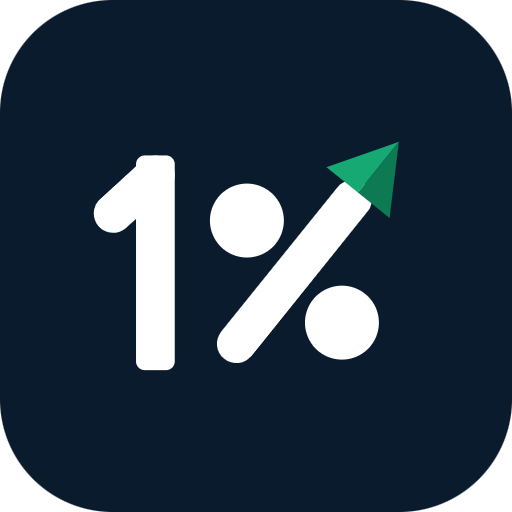

Padre Rico, Padre Pobre
Robert Kiyosaki
Por qué los ricos hacen que el dinero trabaje para ellos y no al revés.
Ver en Amazon
MoneyHabitLibros y juegos que enseñan lo que casi nadie enseña en la escuela: cómo funciona el dinero, cómo pensar como quien construye patrimonio y cómo tratar a las personas.
Cada recomendación tiene una razón escrita por nosotros, no el texto de una editorial. Elegimos clásicos que han ayudado a millones de personas, obras que puedes aplicar desde hoy y juegos con los que toda la familia practica decisiones de dinero sin arriesgar nada. Lee con lápiz en mano y aplica una idea a la vez: un libro no sirve hasta que cambia algo que haces.
Robert Kiyosaki
Por qué los ricos hacen que el dinero trabaje para ellos y no al revés.
Ver en AmazonRobert G. Allen
Estrategias de bienes raíces e inversión explicadas paso a paso.
Ver en AmazonGeorge S. Clason
Parábolas antiguas con las reglas más simples para ahorrar y crecer.
Ver en AmazonMorgan Housel
Historias cortas que muestran que el comportamiento pesa más que el conocimiento.
Ver en AmazonThomas J. Stanley y William D. Danko
Quién es realmente millonario: casi nunca el que lo aparenta.
Ver en AmazonRobert Kiyosaki
Empleado, autónomo, dueño o inversionista: de dónde viene tu dinero cambia todo.
Ver en AmazonR. Nelson Nash
El origen del "Banco Infinito": la idea de financiarte a ti mismo en vez de pedir prestado siempre al banco.
Ver en AmazonDave Ramsey
Un plan directo para salir de deudas y construir un fondo de emergencia.
Ver en AmazonVicki Robin y Joe Dominguez
Mide cada gasto en horas de tu vida y descubre qué te importa de verdad.
Ver en AmazonBenjamin Graham
La guía clásica para invertir con cabeza fría, sin dejarte llevar por el mercado.
Ver en AmazonPeter Lynch
Cómo aprovechar lo que ya conoces para encontrar buenas inversiones.
Ver en AmazonBurton Malkiel
Por qué es tan difícil ganarle al mercado y qué hacer en su lugar.
Ver en AmazonJohn C. Bogle
La defensa de invertir simple y barato en fondos indexados, a largo plazo.
Ver en AmazonTony Robbins
Siete pasos para pasar de ahorrar a tener libertad financiera, con entrevistas a grandes inversionistas.
Ver en AmazonT. Harv Eker
Cómo tus creencias sobre el dinero fijan hasta dónde puedes llegar.
Ver en AmazonStephen R. Covey
Siete hábitos para tomar el control de tu tiempo y tus decisiones.
Ver en AmazonNapoleon Hill
El clásico sobre deseo, disciplina y mentalidad para lograr metas grandes.
Ver en AmazonJames Clear
Cambios pequeños, repetidos cada día, que terminan cambiando tu vida.
Ver en AmazonEckhart Tolle
Soltar la ansiedad por el futuro y el peso del pasado para decidir mejor hoy.
Ver en AmazonMiguel Ruiz
Cuatro reglas cortas para vivir con más paz y menos drama.
Ver en AmazonCarol S. Dweck
Creer que puedes mejorar es lo que te permite mejorar: mentalidad fija contra mentalidad de crecimiento.
Ver en AmazonViktor Frankl
Cómo un sobreviviente encontró razones para seguir en las peores condiciones.
Ver en AmazonRobin Sharma
Una fábula sobre ordenar tu vida, tu tiempo y tus prioridades.
Ver en AmazonDaniel Kahneman
Por qué el cerebro se equivoca con el dinero y cómo frenar las decisiones impulsivas.
Ver en AmazonHéctor García y Francesc Miralles
El secreto japonés de encontrar una razón para levantarte cada mañana.
Ver en AmazonMarco Aurelio
Las notas privadas de un emperador sobre disciplina, calma y control de uno mismo.
Ver en AmazonSimon Sinek
Encuentra tu propósito antes que tu plan: así se lideran negocios y equipos.
Ver en AmazonTimothy Ferriss
Ideas para diseñar tu vida y tu ingreso sin vivir atado a un horario.
Ver en AmazonSun Tzu
Estrategia, preparación y saber cuándo no pelear; sirve igual en los negocios.
Ver en AmazonRobert Greene
Cómo funciona el poder entre personas, para reconocerlo y protegerte de él.
Ver en AmazonNicolás Maquiavelo
El manual clásico de liderazgo y decisiones difíciles, breve y sin adornos.
Ver en AmazonPeter Thiel
Cómo construir algo realmente nuevo en lugar de copiar lo que ya existe.
Ver en AmazonEric Ries
Prueba tu idea de negocio pequeña y rápido antes de gastar tus ahorros.
Ver en AmazonDale Carnegie
Lo esencial para caerle bien a la gente y ganarte su confianza.
Ver en AmazonDale Carnegie
Perder el miedo a hablar delante de otros y decir lo que piensas con claridad.
Ver en AmazonKerry Patterson y otros
Cómo hablar cuando hay mucho en juego y las emociones están altas.
Ver en AmazonMarshall Rosenberg
Pedir lo que necesitas y escuchar al otro sin pelear.
Ver en AmazonRobert Cialdini
Los seis principios que hacen que la gente diga que sí, para usarlos y para defenderte.
Ver en AmazonKeith Ferrazzi
Construir una red de contactos genuina: tu círculo también es tu capital.
Ver en AmazonManuel Antonio Carreño
El clásico latinoamericano de los buenos modales: saludar, comer, vestir y convivir.
Ver en AmazonEmily Post
La referencia estadounidense de etiqueta social y de negocios, con casos prácticos.
Ver en AmazonMary Jane McCaffree y Pauline Innis
Protocolo formal: precedencias, invitaciones, tratamientos y eventos oficiales.
Ver en AmazonJugar es la forma más barata de equivocarte sin perder dinero real. Estos juegos enseñan flujo de caja, deudas e inversión en familia.
Rich Dad Company
El juego de Kiyosaki: sales de la "carrera de la rata" armando ingresos pasivos que superen tus gastos.
Ver en AmazonRich Dad Company
La versión para niños: ahorro, trabajo y activos jugando en familia.
Ver en AmazonHasbro
Comprar propiedades, cobrar rentas y negociar: flujo de caja y riesgo hasta que solo quede uno.
Ver en AmazonHasbro
Carrera, sueldo, deudas y decisiones: un recorrido rápido por la vida adulta.
Ver en AmazonHasbro
Presupuesto mensual, facturas y préstamos: aprender a llegar a fin de mes.
Ver en AmazonAvalon Hill
Compra acciones de cadenas de hoteles que se fusionan: invertir, diversificar y leer el mercado.
Ver en AmazonWinning Moves
Un juego de cartas a gritos para intercambiar materias primas, como en una bolsa de verdad.
Ver en AmazonMoneyHabit es una app gratuita para Android en español, inglés y portugués: registra tus finanzas, construye hábitos, practica en un simulador de bolsa con dinero ficticio y aprende cada día.
Son ideas de los autores, no asesoría financiera. Contrasta cada estrategia antes de aplicarla con tu dinero. Los títulos y marcas pertenecen a sus dueños; MoneyHabit no está afiliado a los autores ni a las marcas.